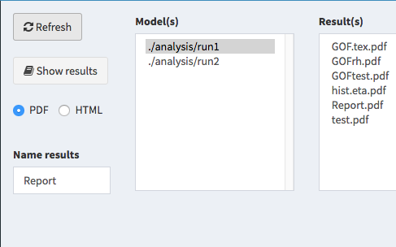

3.1 ShinyMixR - project-centric interface
3.1.1 Introduction
The nlmixr package can be accessed through command line in R and RStudio, and through an graphical user interface ShinyMixR supported by the nlmixr team. Both command line and interface support the integration with xpose.nlmixr.
ShinyMixR aims to provide a user-friendly tool for nlmixr based on Shiny, which facilitates a workflow around an nlmixr project. It is build as a project-centric, instead of interface-centric, workflow around nlmixr from the R command line and from a streamlined Shiny application. The shinydashboard package was used to set up a structure for controlling and tracking runs with an nlmixr project, and was the basis for setting up the modular interface.
This project tool enhances the usability and attractiveness of nlmixr, facilitating dynamic and interactive use in real-time for rapid model development. In this project-oriented structure, the command line and dashboard can be used independently and/or interdependently. This means that many of the functions within the package can also be used outside the interface within an interactive R session.
Using the ShinyMixR, the user specifies and controls an nlmixr project workflow entirely in R. Within a project folder, a structure can be created to include separate folders for models, data and runs. Functionality is available to edit and run model code, summarize and compare model outputs in a tabular fashion, and view model development using a tree paradigm. Inputs, outputs and metadata are stored in relation to the model code within the project structure (a discrete R object) to ensure traceability.
Results are visualized by using modifications of existing packages (such as xpose.nlmixr, user-written functions and packages, or pre-existing plotting functionality included in the ShinyMixR package. Results are reported using the R3port package in pdf and html format.
How the package can be used and what the most important functions are, is described in this section. When working with this package, there are two important assumptions:
- A specific folder structure is in place. The package uses this structure to read and write certain files (the folder structure can be generated automatically using the
create_projfunction). - Within a folder structure, multiple models can be present and is considered a “project”. The package creates and manages a project object which is available in the global environment.
An introduction on how to use the ShinyMixR interface can be found here. To get started, first install the package and use the library.
3.1.2 Getting started
To get started, first install the package using:
devtools::install_github("richardhooijmaijers/shinyMixR")Be aware that the nlmixr, nlmixr.xpose and R3port package should be installed before installing shinyMixR, e.g.:
devtools::install_github("richardhooijmaijers/R3port")
devtools::install_github("nlmixrdevelopment/nlmixr")
devtools::install_github("nlmixrdevelopment/xpose.nlmixr")The easiest way to get to know the package is to create the folder structure (which include some example models):
library(shinyMixR,quietly = TRUE)
create_proj()By default, a folder structure is created within the current directory. The following folders are created:
- analysis: in this folder all plots and tables are saved in a structured way to make them accesible to the interface
- data: data files used by the models in R data format (.rds)
- models: models, available as separate R scripts according the unified user interface in
nlmixr - scripts: generic analysis scipts made available in the interface
- shinyMixR: folder used by the interface to store temporarly files and results files
The interface monitors what happens in these folders. This is important to know because new models and/or data can be copied into these folders or files can be removed. This will then be recognized within the app (after refreshing the overview). This way it is possible to work on data and models separately and plug it in to shinyMixR at a later stage.
Once there is a folder structure present the interface can be started:
run_shinymixr(launch.browser = TRUE)The interface will be started and a project object will be created in the global environment in which all information is kept/managed. If correct, the interface will open in the default browser and the following will be seen:

On the left side, there is sidebar with various menu items. The content of the main body will open with the model overview but will change based on the selected menu item in the sidebar. The sidebar can be collapsed by clicking the three lines in the top bar, providing more room for the main body.
3.1.3 Overview
The overview page can be used to see which models are present in a project, the relationship between models and to adapt model meta data. The overview can be exported to a CSV file and a selection of columns can be made that should be displayed (all using the DT package).
3.1.4 Edit models
The edit tab can be used to edit existing models within an editor including syntax coloring (using shinyAce). It is also possible to create new models using various templates or to duplicate existing models.
3.1.5 Run models
The run tab can be used to run models within a project. It is possible to run one or multiple models at once. Also it is possible to assess the intermediate output or progress for an nlmixr run.
3.1.6 Parameter estimates

The parameter estimates tab can be used to generate a table with parameter estimates. In case multiple models are selected the table will show the results of each run in a separate column. This page is reactive which means that in case a different model is selected, the table is directly updated. There is also the possiblity to save the table to a latex/pdf or html file.
3.1.7 Goodness of fit

The goodness of fit tab can be used to generate a combination of 4 goodness of fit plots combined. By default nlmixr.xpose is used but direct ggplot can also be used by specifying this in the settings. Also here the plots can be saved to a latex/pdf or html file.
3.1.8 Fit plots

The fit plots tab can be used to generate a individual fit plots. The same options are present here as for the goodness of fit plots.
3.1.9 Scripts

It is possible to write your own scripts that can be used to analyse model results. This script can be used to process the result for one or multiple models at once (the interface will include the name of the selected models in the script). An example of how such a script will look like is included in the package.
3.1.10 Results

It is possible to view and combine the results from the models within a project within the last tab.
3.1.11 Interactive session
When working in an interactive R session, many functions used by the interface are also available from an interactive R session. When working outside the interface it is important to know how to interact with the project object. This object should be created as one of the first steps because other function rely on the availability of this object:
proj_obj <- get_proj()This function will look in the folder structure to create or update the available information. The result is a list that is build-up as follows:
object
|--- run 1
| |--- model location
| |--- model meta data
| |--- model high level results
|
|--- ...
|
|--- meta data (time of last refresh)In case this object is not present it will be created by looking at the files present in the current folder structure. In case the object is already present it will check if newer files are present in the current folder and will update the object with this information. Therefore one have to be aware that this function should be submitted manually in case new information is present in the one of the folders.
Once a folder structure is in place and the project object is created, an overview can be created for the available models and, if models are submitted, high level results. It is also possible to display a collapsible d3 tree view of the models. This is mainly useful in case reference to models is provided to show the hierachy of the models within a project:
overview()
tree_overview()Although the nlmixr package obiously has the possibilty to run nlmixr models, the shinyMixR package also have a function available named run_nmx. the main reason this function was written is the option to run the model in an external R session. This is necessary within the interface to overcome the application from freezing when a model is submitted. Also within an interactive R session it is convenient because you do not have to wait for a run to finish. An example how this can be used is given below:
#proj_obj <- get_proj()
#run_nmx("run1",proj=proj_obj)run_nmx("run1",proj=proj_obj)
# progress of a run is written to external text file
# this can be read-in for intermediate assessment
readLines("shinyMixR/temp/run1.prog.txt")The current version of the package has three functions for assessing the model results. The first function is to create a simple parameter table par_table. By default this function returns a data.frame. In case multiple models are selected, each column will have the results of the selected model. The results can also be written to a PDF (using latex) or html file using the R3port package:
par_table(proj_obj,c("run1","run2"))
# par_table(proj_obj, models="run1", outnm="par.tex")For assessing the goodness of fit, the gof_plot function can be used. This function will by default use the nlmixr.xpose package to create 4 different types of plots. It is also possible to directly create ggplot2 types of plots. By default the plots will be created within the R session but can also be written to pdf/html using the R3port package:
res <- readRDS("./shinyMixR/run1.res.rds")
gof_plot(res)
# gof_plot(res, mdlnm="run1", outnm="gof.tex")The last plot is an individual fit plot fit_plot. This function will also by default use the nlmixr.xpose package to create a plot per individual including the observed data, indivual and population predictions. Also here it is possible to create ggplot2 types of plots and plots can be outputted to pdf/html:
fit_plot(res, type="user")
# fit_plot(res, mdlnm="run1", outnm="fit.html")